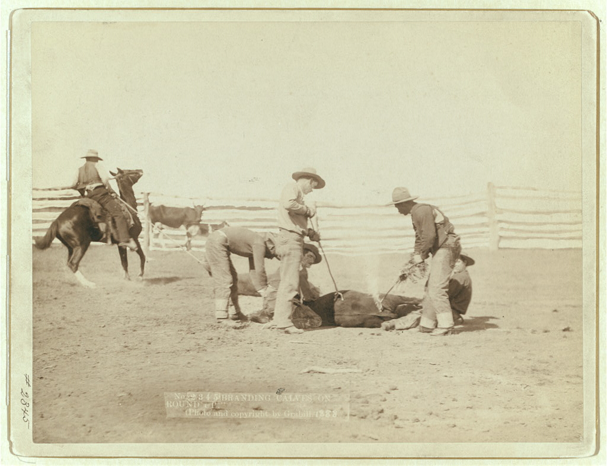

Directions: Study the photograph and the background note, then answer the questions.

Background. On the open range, cattle from many owners grazed together on public grass. At the roundup, cowboys gathered the herds, separated each owner's animals, and branded the new calves with the owner's mark so they could be identified, sorted, and later driven to a railhead for shipment east. By the time this photograph was taken in 1888, the system was already changing: barbed wire was fencing the range, and railroads were building into cattle country.
roundup: the gathering of cattle from the open range to sort, brand, and prepare them for shipment or sale
brand: a mark burned into an animal's hide to show which owner it belongs to
1. What details in the photograph show that branding was group work, not a one person job?
2. Why did cattle raised on open public grass need brands at all? Connect your answer to how the open range system worked.
3. This photograph was taken in 1888, near the end of the cattle drive era. Using the fence visible in the photograph and one fact from the lesson, explain what was happening to the open range system.
1. [Blueprint 10: Mining, cattle, farming, and the commercial West] Several cowboys work together around one calf: some hold the animal down and steady it while another applies the brand. Students should cite the number of men, their positions around the calf, and the ropes and corral holding the animal in place.
2. [Blueprint 10: Mining, cattle, farming, and the commercial West] Herds from many owners mixed on unfenced public grass, so ownership was not visible from the animal itself. The brand made ownership readable: at the roundup each owner's cattle could be sorted out, counted, and driven to a railhead under the right name.
3. [Blueprint 10: Mining, cattle, farming, and the commercial West] The corral fence in the photograph is part of a closing landscape. Barbed wire, patented in 1874, enclosed the open range cheaply and blocked trails and water; at the same time railroads built into Texas and removed the need for long drives, and severe winters in the middle 1880s killed herds in large numbers. The open range system the roundup belonged to was being fenced, bypassed, and replaced by smaller fenced ranching.
Teacher note. This check is formative. The common weak answer on question 3 treats the fence as ordinary ranch equipment only. Push students to connect the fence to the end of the system: once range is fenced into owned parcels, the shared grass, the long trail, and the big mixed roundup all lose their reason to exist.